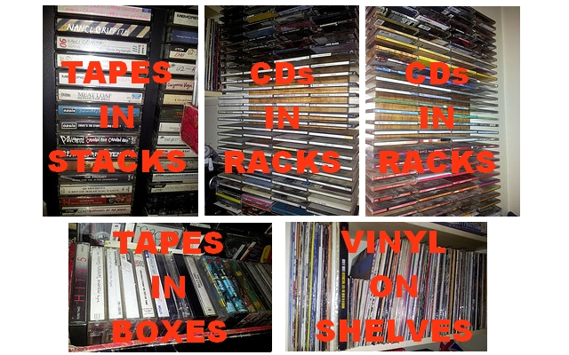

@ OGN #30 - Introduction
Who is SCANPI?
- Part 1 - What is it?
- Part 2 - What does it look like?
- Part 3 - What else might it let you do?
@ OGN #30 - Part 1
What is it? (and where did it start)

@ OGN #30 - Part 1
The basics
@ OGN #30 - Part 1
PI setup
@ OGN #30 - Part 1
Beocenter 4600 AKA Output
@ OGN #30 - Part 1
Shellplayer
9 Shell scripts to make music from the Big Disc squee out through the PI to the Beocenter.
album.sh - a function to 'queue' an albums worth of music
band.sh - a function to 'queue' all of one band or artists music
go.sh - a function to nohup and loop the play function
exit.sh - a function to stop playback and cancel the main play process
play.sh - the main 'play' process
queue.sh - a function to add a single track to the queue
reindex.sh - a function to read all mp3s and create an ordered and randomized index
skip.sh - a function to skip the current playing track
track.sh - a function to 'queue' a single track
@ OGN #30 - Part 1
Shellplayer in use (after some judicious LN -S'ing)
SSH from device to 192.168.0.227.
Type "./g" to start it playing.
Want to queue up a track? Type "./t" and it'll guide you through track selection.
Want to queue up an album? Type "./a" and it'll guide you through album selection.
Want to queue up all the music by one band? Type "./b" and it'll guide you through.
Don't like the track it's playing? Type "./s" to skip,
Want it to stop? Type "./e" and it'll shut down.
@ OGN #30 - Part 2
What does it look like?
(now it needs a face)
@ OGN #30 - Part 2
SCANPI.co.uk | PI:IP/scanpi/index.html
@ OGN #30 - Part 2
The codes
@ OGN #30 - Part 2
The SCAN
@ OGN #30 - Part 2
The Brainz
@ OGN #30 - Part 2
The Track / Album / Band picker
@ OGN #30 - Part 3
What else might it let you do?
(another level appears)
Mobile as music controller (SCANPIMOB does the thing)
Vinyl digitised (after 1980 or so, they had barcodes too!)
Tapes digitised (WIP to use 2D/QR codes to select)
Playlists (M3U creation process working sweetly)
Play when not at home (Streams to any device)
@ OGN #30 - Thanks
Thanks, now please go home and Physically interact with your digitised music.
I am peter.arbuthnott@gmail.com,
and I built Shellplayer, SCANPI and SCANPIMOB for you (and me).